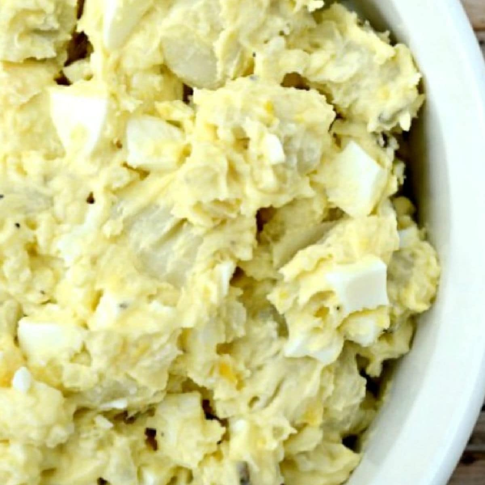

Potato Salad

Description
Now here's what you should bring to a party: the
ultimate crowd-pleasing comfort food, potato salad!
Enjoy chopped potatoes, eggs, pimento, and more in
this island-style version of an American favorite.
When preparing potatoes, make sure they are soft before
cutting into them. I suggest red potatoes peeled for the
best results!
Ingredients
- 2 lbs. red potatoes, boiled and peeled
- 10 large eggs, peeled
- 2 cups Best Foods mayonnaise
- 1 cup sweet pickle relish
- 1 small jar of diced pimentos
- 1/2 cup sliced black olives
- Salt and pepper, to taste
Steps
- Dice the potatoes and eggs. Place them in a bowl; set aside.
- Throw in all the remaining ingredients, combine.
- Once mixed, flatten the top and spread more mayonnaise on
top. Clean sides of bowl.
- Enjoy!